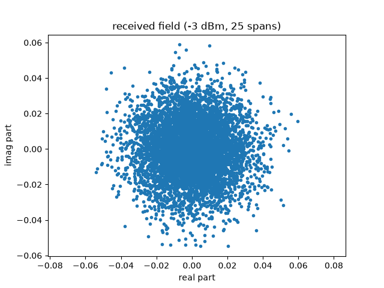
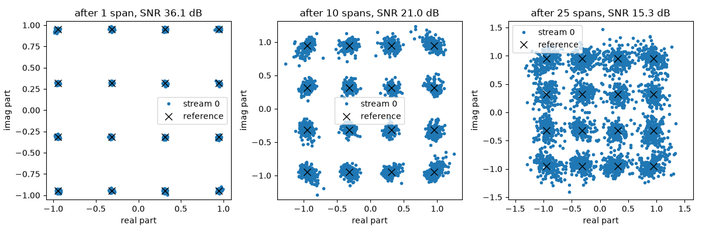
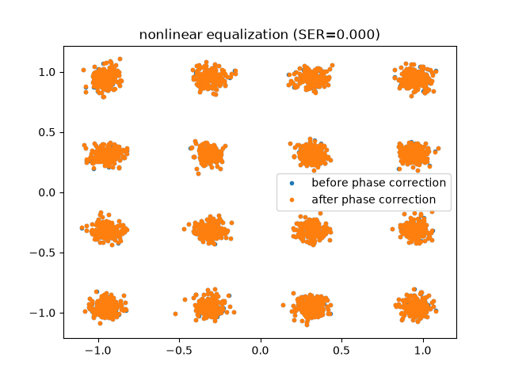
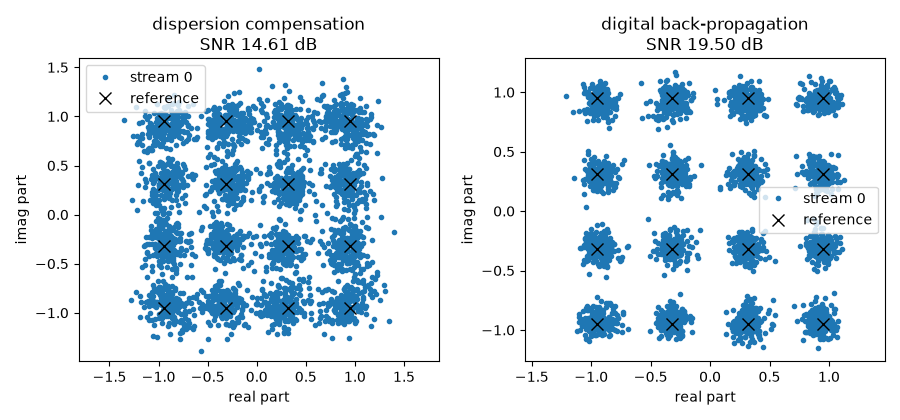
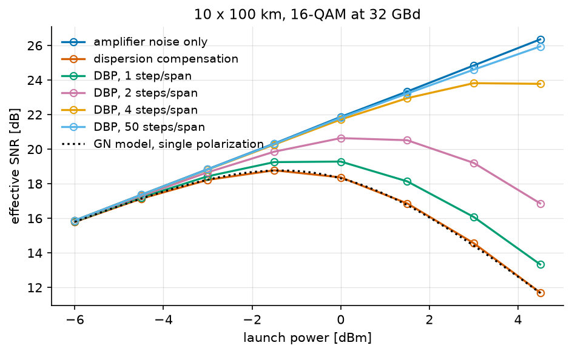
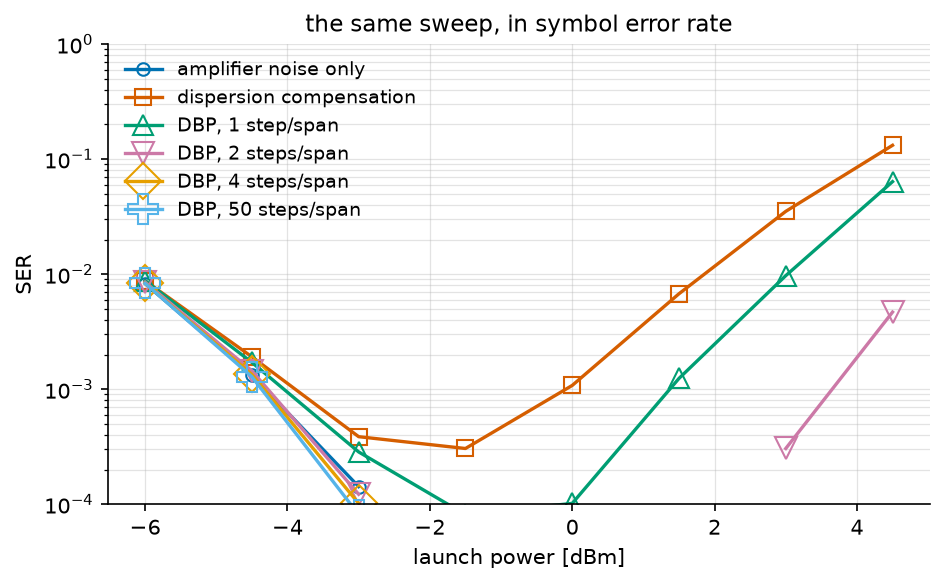

Digital Back-Propagation#
The previous tutorial budgeted for the fibre nonlinearity: it predicted how much nonlinear noise a link makes and chose the launch power that minimizes the total. This tutorial asks the other question – whether the receiver can undo the nonlinearity instead, and what that is worth.
Note
Before you start. Nonlinear Performance and the Gaussian Noise Model introduced the fibre, the split-step propagation and the launch-power trade-off. They are used here without being re-explained. Everything below is single-polarization.
What you’ll learn:
How to write a link as one chain whose span count is an argument, and how a data-aided phase correction is wired into it.
How a signal degrades span after span, and why a linear receiver cannot follow it.
What digital back-propagation is, in one equation.
What it buys in effective SNR and in symbol error rate, what it costs in computation, and where to cut the chain so that cost is paid once.
This tutorial is suited for engineers and students interested in optical communications and nonlinear fiber effects.
Channel Model#
Propagation along a single-mode fibre is governed by the nonlinear Schrödinger equation, which for one polarization reads
where \(\alpha\) is the attenuation, \(\beta_2\) the group-velocity dispersion and \(\gamma\) the Kerr coefficient. The two terms are the whole difficulty: the linear one is diagonal in frequency, the nonlinear one is diagonal in time, and no basis diagonalizes both.
The split-step Fourier method exploits exactly that. Over a step short enough, the two act almost independently, so each is applied where it is diagonal:
one FFT pair per step. A link is \(N_{sp}\) spans of that, each followed by an amplifier which restores the power and adds spontaneous-emission noise of variance \(N_{ase} = (G-1)h\nu\,n_{sp}\), with \(n_{sp} = \mathrm{NF}/\left(2(1 - 1/G)\right)\).
Note
The factor two in \(n_{sp}\) is the definition of the optical noise figure, \(\mathrm{NF} = 2 n_{sp}(1 - 1/G)\), not a modelling choice. A fully inverted amplifier has \(n_{sp} = 1\) and therefore \(\mathrm{NF} = 3\) dB: that is the quantum limit of a phase-insensitive amplifier, and no EDFA does better.
Implementation#
We follow the setup of Häger and Pfister: 25 spans of 80 km, 16-QAM at
10.7 GBd, root-raised-cosine pulses, and 50 split steps per span. Their own
reproduction, with a Gaussian stimulus and the paper’s 500 steps, is in
validation/optical_dbp_hager.py; this page carries a constellation so
it can also show an error rate.
Fifty steps is not a guess. The step-size error is worst where the nonlinearity is strongest, so it is measured there – at the highest launch power of the sweep on the next page – by refining until the answer stops moving:
StPS = 200 SNR = 11.758 dB +0.000 dB 38.0 s
StPS = 100 SNR = 11.759 dB +0.001 dB 19.3 s
StPS = 50 SNR = 11.763 dB +0.005 dB 9.4 s
StPS = 25 SNR = 11.776 dB +0.018 dB 5.0 s
StPS = 12 SNR = 11.845 dB +0.087 dB 2.5 s
Fifty steps sit 0.005 dB from the converged answer and cost a quarter of what two hundred cost. Every number this page reports is quoted to a hundredth of a decibel at best, so the discretization is two orders of magnitude below what is claimed from it – which is the only sense in which a step count is ever “enough”.
The whole system is one chain, and the number of spans is an argument:
"""Fibre propagation span by span, and digital back-propagation.
Run from this directory: it writes the tutorial's figures into
../../docs/tutorials/img/.
"""
import matplotlib.pyplot as plt
import numpy as np
from comnumpy.core import Sequential, plot_iq
from comnumpy.core.compensators import DataAidedPhaseCompensator
from comnumpy.core.filters import SRRCFilter
from comnumpy.core.generators import SymbolGenerator
from comnumpy.core.mappers import SymbolDemapper, SymbolMapper
from comnumpy.core.metrics import compute_effective_snr, compute_ser
from comnumpy.core.processors import Amplifier, Downsampler, Upsampler
from comnumpy.core.utils import Constellation
from comnumpy import style
from comnumpy.optical.dbp import DBP
from comnumpy.optical.fiber import FiberSpec
from comnumpy.optical.links import FiberLink
from comnumpy.optical.utils import dbm_to_watt, launch_amplitude
style.use()
img_dir = "../../docs/tutorials/img/"
constellation = Constellation("QAM", 16)
N_s = 2**9 * 6 # symbols per run
oversampling_sim = 6 # samples per symbol in the channel
oversampling_dsp = 2 # samples per symbol in the receiver
NF_dB = 5 # amplifier noise figure in dB
rolloff = 0.1
StPS = 50 # split steps per span, forward
StPS_DBP = 100 # split steps per span, backward
R_s = 10.7e9 # baud rate
L_span = 80 # span length in km
N_span = 25
dBm = -3
fiber = FiberSpec() # the standard fibre, named so the budget sees it
fs = R_s * oversampling_sim
oversampling_ratio = oversampling_sim // oversampling_dsp
amp = launch_amplitude(dbm_to_watt(dBm))
# --- the chain --------------------------------------------------------
def get_chain(n_spans, *, steps=1, linear_only=True):
"""The whole link, from the symbols to the decisions.
Transmitter, ``n_spans`` of fibre and amplifier, and the receiver
that undoes them. The two strategies of this tutorial are one
argument apart: ``linear_only=True`` undoes the dispersion alone, in
one step per span, ``linear_only=False`` undoes the nonlinearity too,
in ``steps``.
The last block is a data-aided phase correction, and the reference it
needs is the transmitted symbol sequence -- which the chain produces
itself, so the edge is declared with ``wiring`` instead of being
passed by hand. What comes out of the chain is therefore ready to be
compared with what went in, at any number of spans.
"""
return Sequential([
SymbolGenerator(constellation.order, name="data_tx"),
SymbolMapper(constellation, name="signal_tx"),
Amplifier(amp),
Upsampler(oversampling_sim, scale=np.sqrt(oversampling_sim)),
SRRCFilter(rolloff, oversampling_sim, method="fft"),
FiberLink(N_spans=n_spans, L_span=L_span, StPS=StPS, NF_dB=NF_dB,
fs=fs, fiber=fiber, name="link"),
Downsampler(oversampling_ratio, use_filter=True, name="rx_field"),
DBP(n_spans, L_span=L_span, StPS=steps, step_type="linear",
use_only_linear=linear_only, fs=fs / oversampling_ratio,
fiber=fiber, name="dbp"),
SRRCFilter(rolloff, oversampling_dsp, method="fft",
scale=1 / np.sqrt(oversampling_dsp)),
Downsampler(oversampling_dsp),
Amplifier(1 / amp),
DataAidedPhaseCompensator(name="phase"),
SymbolDemapper(constellation, name="data_rx"),
], taps=["data_tx", "signal_tx", "rx_field", "phase", "data_rx"],
wiring={"phase.reference": "signal_tx"})
def score(chain):
"""Effective SNR in dB and symbol error rate of a finished run."""
return (compute_effective_snr(chain.tap("signal_tx"),
chain.tap("phase"), unit="dB"),
compute_ser(chain.tap("data_tx"), chain.tap("data_rx")))
Two things in that chain are worth naming.
The receiver ends with a data-aided phase correction. It belongs there:
the nonlinearity turns average power into phase, so what comes out of the
back-propagation carries a rotation of the whole constellation, which a real
receiver removes with a carrier recovery. Its reference is the transmitted
symbol sequence, which the chain produces itself, so the edge is declared
– wiring={"phase.reference": "signal_tx"} feeds the compensator the
output of the signal_tx block before it runs, on every pass.
And taps names the four signals the figures need. rx_field is the
field as it comes off the fibre, before any of the DSP; phase is the
final estimate. Reading them costs nothing and keeps the module list a
description of the system rather than of the plotting.
Degradation, span by span#
Call that chain once per span count, seeded identically each time, and the only thing that changes is the distance travelled. Each count is run twice: the second pass switches the fibre’s Kerr term off through the chain, which leaves the amplifier noise alone and gives every other number something to be read against.
# symbols and the amplifier noise are identical, so the only thing that
# changes along the curve is the distance travelled. Every chain records
# the wall time of its last pass in `elapsed_`, so the run is also the
# measurement.
#
# Each span count is run twice. The second pass switches the fibre's Kerr
# term off through the chain -- same seed, same symbols, same amplifiers,
# so the *only* thing removed is the nonlinearity. What is left is the
# ASE the amplifiers have piled up, and it is the reference every number
# below is read against: a receiver cannot do better than a link with no
# nonlinearity in it. It is also the cheapest check that the chain is
# sound, because that reference has a closed form and the fibre does not.
spans = (1, 5, 10, 15, 20, 25)
estimates = {}
snr_per_span = {}
snr_ase_only = {}
print("spans measured ASE only the fibre SER phase time")
for n_spans in spans:
chain = get_chain(n_spans).seed(0)
chain(N_s)
estimates[n_spans] = chain.tap("phase")
snr, ser = score(chain)
snr_per_span[n_spans] = snr
elapsed = chain.elapsed_
theta_deg = np.rad2deg(chain["phase"].theta_)
# the field the receiver saw, before any of the DSP; the loop keeps
# overwriting it, so what survives it is the longest link's
received_field = chain.tap("rx_field")
chain.seed(0).set_params(link__use_only_linear=True)
chain(N_s)
snr_ase_only[n_spans] = score(chain)[0]
print(f"{n_spans:5d} {snr:8.2f} dB {snr_ase_only[n_spans]:7.2f} dB "
f"{snr_ase_only[n_spans] - snr:8.2f} dB {ser:8.4f} "
f"{theta_deg:+7.1f} deg {elapsed:6.1f} s")
spans measured ASE only the fibre SER phase time
1 36.09 dB 37.11 dB 1.02 dB 0.0000 -1.2 deg 0.1 s
5 25.93 dB 30.65 dB 4.72 dB 0.0000 -7.0 deg 0.3 s
10 20.99 dB 27.68 dB 6.69 dB 0.0007 -14.8 deg 0.7 s
15 18.56 dB 25.94 dB 7.38 dB 0.0023 -22.9 deg 1.1 s
20 16.73 dB 24.72 dB 7.99 dB 0.0091 -31.0 deg 1.4 s
25 15.31 dB 23.70 dB 8.39 dB 0.0238 -39.2 deg 1.7 s
The third column is the subject of this tutorial. It is the price of the Kerr effect, measured rather than argued: 1.02 dB after one span, 8.39 dB after twenty-five. Nothing else in the chain changed between the two passes – same symbols, same amplifiers, same noise realization – so the difference is the nonlinearity and only the nonlinearity.
The two accumulations are of different kinds, and separating them is the point. Over the link the amplifiers alone cost 13.4 dB, which is just twenty-five of them instead of one. The fibre costs 8.4 dB on top of that, and unlike the noise it is deterministic: it was produced by an equation the receiver knows.
That reference is worth two checks before any of it is believed, and both are cheap enough to leave in the script:
# chain before believing a decibel it produces.
#
# The first switches the noise off as well as the nonlinearity. What is
# left is what the transmitter and the receiver do to a signal that
# travelled through nothing: the distortion floor of the DSP itself --
# pulse shaping, resampling, matched filtering. It has to sit far above
# every number in the table, or the chain is measuring its own filters
# rather than the fibre.
floor = get_chain(1).seed(0)
floor.set_params(link__use_only_linear=True, link__noise_scaling=0.0)
floor(N_s)
print(f"\ndistortion floor of the chain, no noise and no fibre: "
f"{score(floor)[0]:.1f} dB")
# The second is the amplifier noise against its closed form. The link
# budgets its own noise: `budget` asks it how much ASE it accumulates in
# the bandwidth a matched filter keeps -- the symbol rate, not the
# simulated `fs` -- and that prediction owes the simulation nothing, it
# comes from the noise figure and the span loss alone.
print("\nspans ASE only P / P_ASE gap")
for n_spans in spans:
link = get_chain(n_spans)["link"]
ase_W = link.budget(R_s)["ase_power_W"]
predicted = 10 * np.log10(dbm_to_watt(dBm) / ase_W)
print(f"{n_spans:5d} {snr_ase_only[n_spans]:8.2f} dB {predicted:8.2f} dB "
f"{snr_ase_only[n_spans] - predicted:+8.2f} dB")
distortion floor of the chain, no noise and no fibre: 46.3 dB
spans ASE only P / P_ASE gap
1 37.11 dB 37.64 dB -0.53 dB
5 30.65 dB 30.65 dB +0.00 dB
10 27.68 dB 27.64 dB +0.04 dB
15 25.94 dB 25.88 dB +0.06 dB
20 24.72 dB 24.63 dB +0.09 dB
25 23.70 dB 23.66 dB +0.04 dB
The first number is the chain talking to itself: noise off, fibre off, so what comes out is the transmitter and the receiver measured against each other. 46.3 dB is twenty-three decibels clear of the worst row in the table, which is what licenses reading that table as a measurement of the fibre. A chain whose own filters cost 23 dB would produce a curve of the same shape and none of it would be physics – pulse shaping, resampling and matched filtering are invisible when they are right and indistinguishable from a fibre when they are wrong.
The second compares the amplifier noise with a closed form that owes the simulation nothing: \(P/P_{\mathrm{ASE}}\), built from the noise figure and the span loss alone. From five spans on it agrees within 0.09 dB. The one-span row is 0.53 dB low, and that is the distortion floor showing through – at 37 dB the chain’s own 46.3 dB is no longer negligible, and two noises that close add. The check reports it rather than hiding it.
plot_iq(received_field,
title=f"received field ({dBm} dBm, {N_span} spans)")
plt.savefig(f"{img_dir}/one_shot_nli_fig1.png")
{kind=link}

That is the field the receiver is handed. Nothing is recognizable: the dispersion has spread each symbol over hundreds of neighbours, so the field looks Gaussian whatever was transmitted. What the chain makes of it, at three distances:
fig, axes = plt.subplots(nrows=1, ncols=3, figsize=(12, 4))
for ax, n_spans in zip(axes, (1, 10, 25), strict=True):
plot_iq(estimates[n_spans], reference=constellation, ax=ax)
ax.set_title(f"after {n_spans} span{'s' if n_spans > 1 else ''}, "
f"SNR {snr_per_span[n_spans]:.1f} dB")
plt.tight_layout()
plt.savefig(f"{img_dir}/one_shot_nli_fig2.png")
# the dicts are keyed by span count in sweep order, so their values
# are already the curves
measured = np.array(list(snr_per_span.values()))
ase_only = np.array(list(snr_ase_only.values()))
# An effective SNR is not an error rate: linear ordinate, two curves,
# nothing a helper would say better than the four lines that draw it.
fig3, ax = plt.subplots()
ax.plot(spans, ase_only, "o-", fillstyle="none", label="amplifier noise only")
ax.plot(spans, measured, "s-", fillstyle="none",
label="dispersion compensation only")
ax.set_xlabel("spans travelled")
ax.set_ylabel("effective SNR [dB]")
ax.set_title(f"{dBm} dBm launch power")
ax.grid(True)
ax.legend()
plt.tight_layout()
plt.savefig(f"{img_dir}/one_shot_nli_fig3.png")
{kind=link}

{kind=link}

Nearly 21 dB lost over the link, and the two curves say how it was lost. They start 1 dB apart and end 8.4 dB apart: the amplifier noise sets the slope, the fibre bends the measured curve away from it. The constellations show the difference in kind – after one span the clusters are tight, after twenty-five they are smeared, and the smearing is not noise but a deterministic scatter the dispersion has spread over hundreds of neighbouring symbols.
The phase column measures a third effect, and it is the one the compensator absorbs: self-phase modulation rotates the constellation by 1.2 degrees per span, 39 degrees over the link. Left in, that rotation would dominate the error rate, which is why the compensator sits in the chain and not in a comment.
The last column is the one to keep, and it is not the receiver’s:
profile_execution_time runs the chain and times each block on the way
through, which says where it all went.
# Where that time goes. `profile_execution_time` runs the chain and times
# each block on the way through, so the same pass answers the question.
profile = get_chain(N_span).seed(0).profile_execution_time(N_s)
print("\nblock time")
for block_id, elapsed in profile.items():
print(f"{block_id:22s} {1e3 * elapsed:8.1f} ms")
block time
data_tx 0.1 ms
signal_tx 0.0 ms
upsampler 0.2 ms
srrcfilter 1.9 ms
signal_amplifier 0.1 ms
link 1721.7 ms
rx_field 0.9 ms
dbp 3.9 ms
srrcfilter_2 0.5 ms
downsampler 0.0 ms
signal_amplifier_2 0.0 ms
phase 0.1 ms
data_rx 0.4 ms
Thirteen blocks, and one of them is 99.5 % of the run. The split-step propagation is 25 spans of 200 steps, each an FFT pair and a pointwise rotation; everything else is a handful of milliseconds. Keep that ratio in mind – it is what the Monte-Carlo section below has to work around.
Digital Back-Propagation#
The nonlinear Schrödinger equation is deterministic and invertible. In the absence of noise, propagating the received field back through the same equation with the signs reversed,
returns exactly what was transmitted. That is digital back-propagation: the same split-step method the channel was simulated with, run backwards. Its only approximation is the step size, and its only genuine limit is the ASE noise, which was added along the link and is amplified rather than removed by the backward pass.
Dispersion compensation alone is the same algorithm with the nonlinear term
switched off – one step per span instead of \(\mathrm{StPS}\) – so the
two strategies are one argument of get_chain apart.
Results#
# --- 2. undoing the nonlinearity too ----------------------------------
# The same chain with the nonlinear term switched back on in the
# receiver. Everything else -- the seed, the link, the phase correction
# -- is unchanged, so the comparison is over the same realization.
back_propagated = get_chain(N_span, steps=StPS_DBP,
linear_only=False).seed(0)
profile_dbp = back_propagated.profile_execution_time(N_s)
snr_dbp, ser_dbp = score(back_propagated)
print(f"\ndispersion compensation SNR={snr_per_span[N_span]:5.2f} dB "
f"receiver {1e3 * profile['dbp']:7.1f} ms")
print(f"digital back-propagation SNR={snr_dbp:5.2f} dB SER={ser_dbp:.4f} "
f"receiver {1e3 * profile_dbp['dbp']:7.1f} ms "
f"residual phase={np.rad2deg(back_propagated['phase'].theta_):+.1f} deg")
fig, axes = plt.subplots(nrows=1, ncols=2, figsize=(9, 4.2))
for ax, symbols, name in [
(axes[0], estimates[N_span],
f"dispersion compensation\nSNR {snr_per_span[N_span]:.2f} dB"),
(axes[1], back_propagated.tap("phase"),
f"digital back-propagation\nSNR {snr_dbp:.2f} dB")]:
plot_iq(symbols, reference=constellation, title=name, ax=ax)
plt.tight_layout()
plt.savefig(f"{img_dir}/one_shot_nli_fig4.png")
dispersion compensation SNR=15.31 dB receiver 3.9 ms
digital back-propagation SNR=23.48 dB SER=0.0000 receiver 1045.1 ms residual phase=-0.1 deg
{kind=link}

The residual phase names the culprit. Dispersion compensation undoes the dispersion and the loss and leaves a 39 degree rotation of the whole constellation: that is self-phase modulation, the Kerr effect turning average power into phase. Removing that rotation is not enough either – the remaining scatter still costs 2.4 % of the symbols, because the nonlinearity acts along the fibre, interleaved with the dispersion, and not as one rotation at the end.
Back-propagation inverts that interleaving. The residual rotation falls to a tenth of a degree, the effective SNR rises by 8.2 dB, and no symbol in the run is decided wrongly – 512 symbols cannot resolve an error rate below \(2 \times 10^{-3}\), so what the last column says is that the error rate has left the range this run can measure. The Monte-Carlo section below is where that question is answered properly.
Read against the reference of the first table, the two receivers are 8.4 dB and 0.2 dB from a link with no nonlinearity in it. Back-propagation has recovered essentially all of what the fibre took, and what remains is the amplifier noise, which no receiver removes.
What it costs#
The last column of the table is the reason DBP is not simply switched on everywhere. Dispersion compensation is one FFT pair for the whole link; DBP at \(\mathrm{StPS}\) steps per span is \(N_{sp} \times \mathrm{StPS}\) FFT pairs plus as many pointwise phase rotations. Here that is 3.9 ms against 1045 ms – 268 times – for 8.2 dB.
That ratio is what the literature on low-complexity back-propagation exists to improve, and it is also why the useful question is not “DBP or not” but how many steps.
Monte Carlo Evaluation#
We therefore sweep the launch power, with one receiver per step count, on the second link of Häger and Pfister: ten spans of 100 km, 16-QAM at 32 GBd. The reference curve is the same link with its nonlinearity switched off, i.e. what the amplifier noise alone would allow.
"""What back-propagation is worth, as a function of the number of steps.
The launch-power sweep of Hager and Pfister (arXiv:2010.14258), with one
curve per step count. Run from this directory: it writes the tutorial's
figures into ../../docs/tutorials/img/.
"""
import matplotlib.pyplot as plt
import numpy as np
from comnumpy import plot_data, print_data
from comnumpy.core import Sequential
from comnumpy.core.compensators import DataAidedPhaseCompensator
from comnumpy.core.filters import SRRCFilter
from comnumpy.core.generators import SymbolGenerator
from comnumpy.core.mappers import SymbolDemapper, SymbolMapper
from comnumpy.core.metrics import ErrorCounter, compute_effective_snr
from comnumpy.core.processors import Amplifier, Downsampler, Upsampler
from comnumpy.core.utils import Constellation
from comnumpy.core.visualizers import plot_error_rate
from comnumpy.optical.dbp import DBP
from comnumpy.optical.fiber import FiberSpec
from comnumpy.optical.gn_model import (gn_model_nli_power, gn_model_snr,
optimal_launch_power)
from comnumpy.optical.links import FiberLink
from comnumpy.optical.utils import (dbm_to_watt, launch_amplitude,
watt_to_dbm)
from comnumpy import style
style.use()
img_dir = "../../docs/tutorials/img/"
constellation = Constellation("QAM", 16)
N_s = 2**11 * 6 # 12288 symbols per trial; over 4 trials
# the SER floor is one error in 49152, 2.0e-5
oversampling_sim = 6
oversampling_dsp = 2
NF_dB = 5
rolloff = 0.1
StPS = 50 # forward: converged, see the tutorial
R_s = 32e9
L_span = 100
N_span = 10
dBm_list = np.arange(-6, 6, 1.5)
N_trial = 4
fiber = FiberSpec() # the standard fibre, named so the model sees it
fs = R_s * oversampling_sim
oversampling_ratio = oversampling_sim // oversampling_dsp
# --- the chain, in two pieces -----------------------------------------
# The one-shot tutorial ran one chain, transmitter to decision. Here six
# receivers are compared over the *same* channel realization, at eight
# launch powers and four trials each: running the whole chain per
# receiver would re-do 192 split-step propagations instead of 32, and
# the propagation is where all the time goes. So the chain is cut where
# the physics ends and the DSP begins.
def get_channel():
"""Symbols to the field the receiver sees, launch power included."""
return Sequential([
SymbolGenerator(constellation.order, name="data_tx"),
SymbolMapper(constellation, name="signal_tx"),
Amplifier(1.0, name="launch"),
Upsampler(oversampling_sim, scale=np.sqrt(oversampling_sim)),
SRRCFilter(rolloff, oversampling_sim, method="fft"),
FiberLink(N_spans=N_span, L_span=L_span, StPS=StPS, NF_dB=NF_dB,
fs=fs, fiber=fiber, name="link"),
Downsampler(oversampling_ratio, use_filter=True),
], taps=["data_tx", "signal_tx"])
def get_receiver(steps, linear_only, *, gain, reference):
"""Back-propagation, matched filter and data-aided phase correction.
``reference`` is the transmitted symbol sequence of the run being
received: the chain that produced it is a different object here, so
the reference is passed rather than wired.
"""
return Sequential([
DBP(N_span, L_span=L_span, StPS=steps, step_type="linear",
fs=fs / oversampling_ratio, fiber=fiber,
use_only_linear=linear_only, name="dbp"),
SRRCFilter(rolloff, oversampling_dsp, method="fft",
scale=1 / np.sqrt(oversampling_dsp)),
Downsampler(oversampling_dsp),
Amplifier(gain),
DataAidedPhaseCompensator(reference, name="phase"),
SymbolDemapper(constellation, name="data_rx"),
], taps=["phase"])
Before propagating anything, the closed form of Nonlinear Performance and the Gaussian Noise Model says where
the optimum should fall. It describes this link with two changes from the
page it was introduced on – ten spans instead of five, and one polarization
instead of two, which is what polarizations=1 is for:
# --- what the closed form expects of this link -------------------------
# The previous tutorial's GN model is a prediction, so it can be made
# before anything is propagated. Two differences with the link it was
# printed for, and both matter: this link has ten spans rather than five,
# and it is *single*-polarization, so the scalar NLSE applies and the
# weights are the ones of `polarizations=1` -- 5.3 dB more interference
# at equal power. The ASE is over one polarization for the same reason.
ase_W = get_channel()["link"].budget(R_s)["ase_power_W"]
eta = gn_model_nli_power(fiber, span_length_km=L_span, n_spans=N_span,
powers_W=np.array([1e-3]),
frequencies_Hz=np.array([fiber.carrier_frequency_Hz]),
baud_rates_Hz=np.array([R_s]),
polarizations=1)[0] / (1e-3) ** 3
best_power, best_snr = optimal_launch_power(ase_W, eta)
print(f"GN model for this link: P_ASE = {watt_to_dbm(ase_W):+.2f} dBm, "
f"optimum {watt_to_dbm(best_power):+.2f} dBm, "
f"peak SNR {10 * np.log10(best_snr):.2f} dB")
GN model for this link: P_ASE = -21.88 dBm, optimum -1.35 dBm, peak SNR 18.77 dB
That is the prediction the sweep below has to land on.
The sweep follows the storage convention every study of this library
uses. The receivers and the metrics are declared first; each (metric,
receiver) pair gets a pre-allocated array of zeros, indexed by name
on both levels – a column never has to be counted to be found, and a
misplaced +1 between parallel tables is not expressible. The
simulation loop fills those arrays, one child seed per launch power so
the master seed alone reproduces the study, and everything printed or
drawn afterwards reads from the same dictionaries the loop filled.
# Every receiver is the same chain with one argument changed. "amplifier
# noise only" receives a link whose nonlinearity was switched off, which
# is the bound the others are trying to reach.
receivers = {
"amplifier noise only": (1, True),
"dispersion compensation": (1, True),
"DBP, 1 step/span": (1, False),
"DBP, 2 steps/span": (2, False),
"DBP, 4 steps/span": (4, False),
"DBP, 50 steps/span": (50, False),
}
channel = get_channel()
# --- metrics, pre-allocated ------------------------------------------
# One array per (metric, receiver), indexed by name on both levels -- a
# column never has to be counted to be found, and each inner dictionary
# is exactly what print_data and plot_data render.
snr = {}
ser = {}
errors = {}
times = {}
for name in receivers:
snr[name] = np.zeros(len(dBm_list))
ser[name] = np.zeros(len(dBm_list))
errors[name] = np.zeros(len(dBm_list))
times[name] = np.zeros(len(dBm_list))
# --- simulation loop -------------------------------------------------
# One child seed per launch power (D6/D35): the whole study is
# reproduced by the master seed alone.
seed = 0
point_seeds = np.random.SeedSequence(seed).spawn(len(dBm_list))
for index, dBm in enumerate(dBm_list):
point_seed = int(point_seeds[index].generate_state(1)[0])
amp = launch_amplitude(dbm_to_watt(dBm))
# one counter per receiver: the rate is a ratio of error and symbol
# totals over the trials, not a mean of per-trial rates, and the
# count that says whether a point means anything is kept
counters = {}
for name in receivers:
counters[name] = ErrorCounter()
for trial in range(N_trial):
# the two propagations of a trial share their seed, so they
# carry the same symbols and the same amplifier noise and
# differ only by the fibre's Kerr term
fields = {}
for use_only_linear in (True, False):
channel.seed(point_seed + trial)
channel.set_params(launch__gain=amp,
link__use_only_linear=use_only_linear)
fields[use_only_linear] = channel(N_s)
symbols = channel.tap("signal_tx")
reference = channel.tap("data_tx")
# each receiver decides the field that matches its claim: the
# bound receives the linear one
for name, (steps, linear_only) in receivers.items():
receiver = get_receiver(steps, linear_only, gain=1 / amp,
reference=symbols)
detected = receiver(fields[name == "amplifier noise only"])
snr[name][index] += compute_effective_snr(
symbols, receiver.tap("phase")) / N_trial
counters[name].update(reference, detected)
times[name][index] += receiver.elapsed_
for name, counter in counters.items():
ser[name][index] = counter.rate
errors[name][index] = counter.n_errors
# --- results: tables and figures -------------------------------------
# The SNR averages in linear and is read in dB.
snr_dB = {}
for name in receivers:
snr_dB[name] = 10 * np.log10(snr[name])
# transposed: six receiver names as column headers would make the table
# 160 characters wide
snr_data = {"x": dBm_list, "curves": snr_dB}
print_data(snr_data, xlabel="launch power [dBm]",
ylabel="effective SNR [dB]", transpose=True)
print("\nreceiver best SNR at power total time")
for name, values in snr_dB.items():
best = int(np.argmax(values))
total = float(np.sum(times[name]))
print(f"{name:24s} {values[best]:6.2f} dB {dBm_list[best]:6.1f} dBm "
f"{total:9.1f} s")
reference = snr_dB["dispersion compensation"]
best = int(np.argmax(reference))
print(f"\nGN model {10 * np.log10(best_snr):.2f} dB at "
f"{watt_to_dbm(best_power):+.2f} dBm, dispersion compensation "
f"{reference[best]:.2f} dB at {dBm_list[best]:+.1f} dBm")
# What the error-rate figure can resolve, in counts rather than in a
# caveat. At its own best power each receiver is where its curve bottoms
# out, and a point that saw no error has not measured a rate: it has run
# out of symbols. The counters kept the numbers, so the page can say so.
symbols_per_point = N_s * N_trial
print("\nreceiver errors at its best power")
for name in receivers:
best = int(np.argmax(snr_dB[name]))
count = int(errors[name][best])
print(f"{name:24s} {count:7d} over {symbols_per_point} symbols")
# The prediction, on the same axes as the measurement. It describes the
# receiver that only undoes the dispersion -- the GN model counts the
# nonlinear interference as noise, so it has nothing to say about a
# receiver that removes part of it.
fine_powers = dbm_to_watt(np.linspace(dBm_list[0], dBm_list[-1], 200))
# The same object the table printed, drawn, with the closed form on top.
ax = plot_data(snr_data, xlabel="launch power [dBm]",
ylabel="effective SNR [dB]", marker="o", fillstyle="none")
ax.plot(watt_to_dbm(fine_powers),
10 * np.log10(gn_model_snr(ase_W, eta, fine_powers)), "k:",
label="GN model, single polarization")
ax.set_title(f"{N_span} x {L_span} km, {constellation.order}-"
f"{constellation.family} at {R_s / 1e9:.0f} GBd")
ax.legend()
plt.tight_layout()
plt.savefig(f"{img_dir}/nli_simulation_fig1.png")
ax = plot_error_rate(dBm_list, ser, xlabel="launch power [dBm]", ylabel="SER",
title="the same sweep, in symbol error rate")
ax.set_ylim(1e-4, 1)
plt.tight_layout()
plt.savefig(f"{img_dir}/nli_simulation_fig2.png")
effective SNR [dB]
launch power [dBm] -6.0 -4.5 -3.0 -1.5 0.0 1.5 3.0 4.5
-----------------------------------------------------------------------
amplifier noise only 15.9 17.4 18.9 20.4 21.9 23.4 24.9 26.4
dispersion compensation 15.8 17.1 18.3 18.8 18.3 16.9 14.4 11.8
DBP, 1 step/span 15.8 17.2 18.5 19.3 19.2 18.2 16.0 13.4
DBP, 2 steps/span 15.8 17.3 18.7 19.9 20.7 20.6 19.1 16.9
DBP, 4 steps/span 15.9 17.3 18.9 20.3 21.7 23.0 23.8 23.8
DBP, 50 steps/span 15.9 17.4 18.9 20.4 21.8 23.3 24.6 25.9
{kind=link}

This is the figure the whole subject is about. Every curve rises at low power, where the amplifier noise dominates and turning the laser up helps; every curve except the reference then turns over, where the nonlinear interference grows faster than the signal. The reference does not turn over because it has nothing to turn it over: it is the same link with the Kerr term switched off, and it climbs as \(P/P_{\mathrm{ASE}}\) forever – 15.9 dB at \(-6\) dBm against the 15.88 dB the noise budget predicts, 26.4 dB at +4.5 dBm against 26.38 dB. A reference that bent would be a reference with a defect in it.
The maximum of each of the others is the operating point of that receiver, and back-propagation moves it to the right – hesitantly at one step per span, whose curve is nearly flat between \(-1.5\) and \(0\) dBm, then decisively:
receiver best SNR at power total time
amplifier noise only 26.37 dB 4.5 dBm 0.4 s
dispersion compensation 18.85 dB -1.5 dBm 0.3 s
DBP, 1 step/span 19.29 dB -1.5 dBm 0.7 s
DBP, 2 steps/span 20.65 dB 0.0 dBm 1.3 s
DBP, 4 steps/span 23.82 dB 3.0 dBm 2.4 s
DBP, 50 steps/span 25.91 dB 4.5 dBm 28.4 s
Start with the second row, because it is the one the closed form claims to predict:
GN model 18.77 dB at -1.35 dBm, dispersion compensation 18.85 dB at -1.5 dBm
0.08 dB. The Gaussian-noise model of the previous tutorial ran in microseconds and knew nothing of this chain – not the pulse shaping, not the split-step integration, not the matched filter. It described the receiver that leaves the nonlinearity in place, which is exactly the receiver its assumption is written for, and it landed on it. That agreement is what licenses the rest of the table: the simulation is measuring the fibre, not its own numerics.
The closed form has nothing to say about the rows below, and cannot have. It counts the nonlinear interference as noise; a back-propagating receiver removes part of it, and a model that calls something noise cannot describe undoing it.
Read the last two columns of those rows together. Going from one step per span to four buys 4.5 dB; going from four to fifty buys 2.1 dB more and costs twelve times the computation. The returns collapse because the step-size error falls with the number of steps while the ASE noise does not: at fifty steps the receiver is 0.46 dB from the noise-only bound, and no number of steps will close that last gap.
Against dispersion compensation alone, four steps per span are worth 5.0 dB of effective SNR and 4.5 dB of launch power, which is the number a link budget actually spends.
{kind=link}

The error rate says the same thing in the units a link is specified in, and adds the shape the SNR curve hides: a bathtub, whose left wall is the amplifier noise and whose right wall is the nonlinearity. Back-propagation does not move the left wall – it cannot – and pushes the right one out.
The bottom of the figure is the estimator, not the link, and the counters say so in errors rather than in a caveat:
receiver errors at its best power
amplifier noise only 0 over 49152 symbols
dispersion compensation 6 over 49152 symbols
DBP, 1 step/span 4 over 49152 symbols
DBP, 2 steps/span 0 over 49152 symbols
DBP, 4 steps/span 0 over 49152 symbols
DBP, 50 steps/span 0 over 49152 symbols
Four receivers of six saw no error at all at their own best power. Those points are not measurements of an error rate; they are the statement that it is below one in 49152, i.e. \(2 \times 10^{-5}\). That is why the comparison above is made in effective SNR, which uses every symbol rather than only the wrong ones – and why a curve that stops has to say how many errors it stopped on.
Conclusion#
This tutorial highlighted:
How to propagate a signal through a nonlinear fibre with the split-step method, and how to watch it degrade span by span by running the same chain at several span counts.
Where the run time of such a chain goes, and why the receiver comparison is worth splitting in two.
Why the damage is of two kinds, and why only one of them is linear.
What digital back-propagation is, and that it is the channel model run backwards.
What it buys – 4.9 dB and two decades of error rate – and what it costs.
Key takeaway: The fibre nonlinearity is deterministic, so it can be inverted; what cannot be inverted is the amplifier noise that was added along the way. Digital back-propagation buys back most of the nonlinear penalty, at a computational cost proportional to the number of steps it takes.
References#
C. Häger and H. D. Pfister, “Physics-based deep learning for fiber-optic communication systems”, IEEE J. Sel. Areas Commun., vol. 39, no. 1, pp. 280-294, 2021 (arXiv:2010.14258) – the link parameters, the noise model and the step-count comparison used here.
E. Ip and J. M. Kahn, “Compensation of dispersion and nonlinear impairments using digital backpropagation”, J. Lightwave Technol., vol. 26, no. 20, pp. 3416-3425, 2008.
G. P. Agrawal, Nonlinear Fiber Optics, 5th ed., Academic Press, 2013, Chapter 2 – the split-step method and its step-size error.